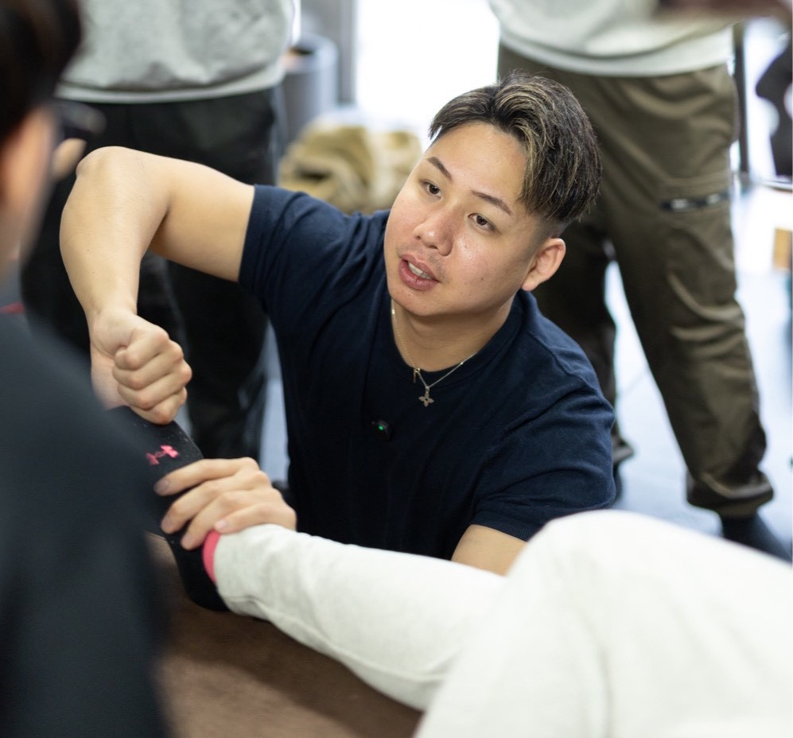
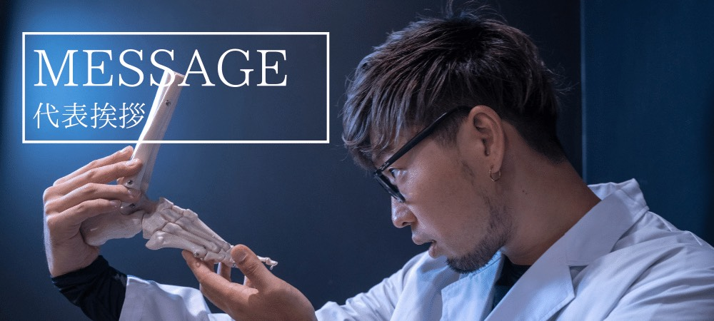

ヘッドコンディショニングの技術を身につけ、その価値を伝え、セミナーを開催する。
自分の地域に学ぶ人が集まり、講師としての活動が広がっていく。
その未来を、技術指導とマーケティングの両面から支えるのが、今回の認定講師養成です。
のりおによる技術・指導法の習得に加え、BAL代表・ミナミがマーケティングを担当。
養成開始から認定後の活動まで、あなたと一緒に集客を考え、実践し、改善していきます。
認定を取った、その先まで。
あなたの地域で、零式を届ける講師へ。
のりおから、零式を教える力を。
ミナミと一緒に、その価値を届ける力を。
技術・指導法の習得から、地域でのセミナー開催に向けた集客準備まで。
3ヶ月の養成期間を通して、講師としての一歩を支えます。
ヘッドコンディショニングの技術を身につけ、その価値を伝え、セミナーを開催する。
自分の地域に学ぶ人が集まり、講師としての活動が広がっていく。
その未来を、技術指導とマーケティングの両面から支えるのが、今回の認定講師養成です。
のりおによる技術・指導法の習得に加え、BAL代表・ミナミがマーケティングを担当。
養成開始から認定後の活動まで、あなたと一緒に集客を考え、実践し、改善していきます。

零式の知識・技術に加え、その価値を受講者へ伝えるための指導法の習得を担当。

活動地域や経験、強み、人とのつながりを踏まえ、募集から申し込みまでの流れを一緒に考え、実践と改善を支援。
「技術は学びたい。でも、自分でセミナーに人を集められるだろうか？」
そんな不安も、相談しながら前に進められるように。
3ヶ月の養成期間では、技術を学ぶのと同時に、あなたの地域でセミナーを開催するための準備を始めます。
まずはミナミとの個別面談で、活動したい地域、これまでの経験、あなたの強みや人とのつながりを確認。
そこから、あなたに合った集客の進め方を一緒につくっていきます。
地域の特徴やあなたの経験を踏まえ、セミナーに参加してほしい人を具体的にしていきます。
参加することで何を学べるのか、どんな場面で活かせるのか。興味や申し込みにつながる伝え方を整理します。
SNSや既存のお客様への案内、地域でのつながりなど、あなたが活用できる手段をもとに、募集から申し込みまでの流れを考えます。
養成期間中から告知や発信を実践し、見込み参加者の反応を確認。手応えのあった方法を伸ばし、課題があれば一緒に改善します。
目指すのは、認定完了時に、技術を教える準備と、地域で参加者を集める準備が整っていること。
学んだことを活動につなげるために、3ヶ月を使っていきます。
講師活動に向けて、零式の知識・技術・指導法を学びます。
学んだ内容を実践し、レポートを提出します。
※実践人数と提出条件は決定次第ご案内します。
筆記試験・技術試験それぞれ70％以上を合格基準とします。
講師として学んだ内容を伝える、最終プレゼンテーションを行います。
所定の認定要件を満たした方は、契約条件に基づく開催権を取得し、地域での活動へ進みます。
※認定には所定の試験等への合格が必要です。
※詳細な研修日程・認定条件は決定次第ご案内します。
認定後は、所定の契約条件に基づき、零式のセミナーを開催する権利を取得できます。
のりおが実践してきた講座運営の仕組みを、認められた範囲で活用しながら、地域での講師活動につなげていく制度です。
※開催権の対象範囲、教材・名称等の利用条件、認定後の費用や更新条件などは、詳細決定後、申込前にご案内します。
認定取得後も、マーケティング支援は続きます。
実際に募集・開催してみて分かることは、たくさんあります。
どんな案内に反応があったか、参加者が何に価値を感じたか、次回に向けて何を変えるとよいか。
その結果を一緒に振り返り、次の集客へ活かしていきます。
初回のセミナー開催を、その先の継続的な活動へ。
開催を重ねながら、あなたの地域や活動スタイルに合った集客方法を育て、講師として収益を得ながら活動を続けられる土台づくりを支援します。
あなたには、技術の習得に加えて、発信や声かけ、地域での関係づくりなど、講師としての行動に取り組んでいただきます。
私たちは、その行動を技術・指導法とマーケティングの両面から支えます。
何から始めればよいかを一緒に考え、実践した結果を確認し、次の一手につなげていく。
迷ったときにも相談しながら進められる環境をつくっていきます。
※マーケティング支援は、ご本人と共同で取り組むものです。集客の全面代行や、集客人数・売上の保証ではありません。
あなたの地域で零式を広め、講師としての可能性を育てていきませんか。
※現在、正式な申込・相談窓口は準備中です。
講師養成について相談する